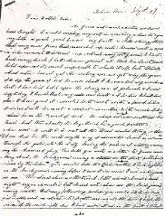
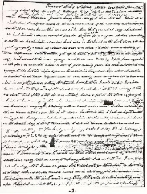
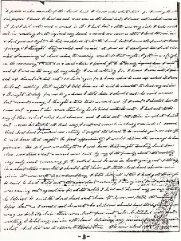

Ellen G. White's letter to Joseph Bates in 1847
History of the secret Bates' 1847 letter
The complete Bates letter had been hidden from the members of the Seventh-day Adventist Church—only the parts of the letter that weren't damaging were available until 1980 when the complete letter was finally uncovered.
Adventist leaders did not want to let members know that Ellen G. White (EGW) believed in the shut door after 1845. Adventist Presidents and leaders had access to this letter and cannot plead ignorance to its existence. An 1847 hand-written letter by EGW would be a letter they could not refuse to read or ignore, especially since EGW was being accused of believing in the shut door by vision after 1845.
This letter proves EGW did not get her visions from God, and that the door of mercy was never closed to the world as taught by William Miller and confirmed by EGW's vision.
From the book, Ellen G. White and Her Critics, by Francis D. Nichol, p. 621, in a footnote that states:
"This date is established by a letter from Mrs. White to Joseph Bates, written from Gorham, Maine, July 13, 1847."
Why didn't Nichol's print this letter? Because he was attempting to defend Ellen G. White against the charge that she taught shut door doctrine, totally ignored the fact that Ellen did believe in the shut door as revealed in the 1847 Bates' letter. (At this point in time the shut door doctrine was understood to teach that the door of mercy was closed to the whole world after October 22, 1844.)
Another example of deception is found in Life Sketches, published in 1915, p.104, where the publishers show a photograph of page one of the Bates' letter showing EGW's own handwriting. The White Estate had full knowledge of the fact that Ellen believed in the shut door from her visions. This letter was put back in the White Estate vault after 1915 untill it was uncovered by Skip Baker in 1980, and later published in Adventist Currentsin July 1984.
Robert Olson of the White Estate stated:
"Ellen misinterpreted this vision…But she incorrectly concluded that no one could accept Christ after October 22, that only the little flock remaining in the household of faith would be saved, and that everyone else would be lost." One Hundred and One Questions, 1980, p. 58.
Robert Olsen's confession only came when the Bates' letter was uncovered. From 1847 till 1980 is 133 years of deception. Does this remind anyone of the 1919 Bible Conference records that were hidden 55 years till 1974, when found by Donald Yost. This has been the history of Adventism, to hide, lie and cover up the truth of Adventist history. Uncovering the truth has never been encouraged by Adventist leaders—look at Rae, Ford, Veltman, Ron Numbers and more. Adventist apologists can no longer say that Ellen G. White did not believe the "shut door".
Note:The last pages of the letter are missing. What happened to the last pages of the letter—were they so bad that they had to be discarded?
Adventists Currents, July 1984
By Skip Baker
"I believe it was just around the new year of 1979-80. Iwas a photographer at the Review and Herald Publishing Association. A number of us were in the art department discussing the transcript of a letter written by Ellen G. White which someone had sent me the week before. The book editor, Tom Davis, had just joined our conversation; and with some warmth he was insisting that the transcript was not genuine, since it indicated that Ellen White believed in the shut-door three and a half years after the great disappointment. This was the meaning of the term "shut door," held by the pioneers of Seventh-day Adventism until 1851: that only those who had believed William Miller's mistaken message could be saved. All others were lost since the bridegroom had come and "shut the door" of probation.
Elder Davis asked if I had seen the original letter; and when I admitted that I had not, he said that I shouldn't talk about something that I could not prove and knew very little about. I agreed completely and realized how easy it would be for someone to fabricate the letter in an attempt to discredit Sister White. I resolved then and there not to talk about the letter until I could read the original in the Ellen G. White Estate vault, if it existed at all.
In the photo studio at that time I had a large oil painting attached to the wall waiting to be copied on 8xI0 sheet film for reproduction. The White Estate had commissioned the artist, Elfred Lee, to render a beautiful depiction of the fall of man, his redemption, and the second coming of Christ; and they wanted to sell copies at the upcoming General Conference session in Dallas. Ron Graybill called from the White Estate to say how desperately they needed the transparency to meet their printing deadline, and suddenly I had a flash. "Tell you what, Ron," I said, "bring me Ellen White's July 13, 1847, letter to Joseph Bates; and I will drop everything and photograph your painting today."
"Has that letter been released?" he asked. And I told him that Arthur White had released a transcript to the scholars in 1971. This satisfied him, and later he arrived in my office with the letter, anxious to get the painting shot and to the printers. When he left I took the letter into the studio, thinking that if I worked fast there might be just enough time to photograph it before he returned. My hand trembled as I laid the 133-year-old letter on the copy table, adjusted the polarizing lights, put a red filter on my 6x7 Pentax, and filled the viewfinder with the letter. Due to the cross-polarized lights and red filter, the enlarged photographs were easier to read than the original; and when I compared it to the typed transcript, I discovered that the two were nearly identical.
The White Estate typescript is corrected for spelling, capitalization, and punctuation. Punctuation and capitalization are all but missing from Ellen White's handwritten original, and the White Estate has supplied paragraphing where there is none in the original. The letter ends abruptly because its closing page or pages apparently are not in the possession of the White Estate." —Adventists Currents, p. 12, July 1984.
The letter Ellen White wrote to Joseph Bates
Gorham, Maine, July 13, 1847
As James is at work and sisters are from home thought I would employ myself in writing a line to you. My health is quite good for me. My faith is still strong that that very same Jesus that ascended up into heaven will so come in like manner as He went up, and that very, very soon. I have had many trials of late; discouragement at times has laid so fast hold upon me it seemed impossible to shake it off. But thank God, Satan has not got the victory over me yet, and by the grace of God he never shall. I know and feel my weakness, but I have laid hold upon the strong arm of Jehovah, and I can say today I know that my Redeemer liveth, and if He lives I shall live also. Oh how good it would be to meet with a few of like precious faith to exhort and comfort one another with words of holy cheer from the word of God. The sheep are now scattered, but thank God, they are about to be gathered to a good pasture.
Oh how sweet it will be to meet all the blood-washed throng in the city of our God. 'Tis then we'll sing the song of Moses and the Lamb as we march through the gates into the city, bearing the palms of victory and wearing the crowns of glory.
Brother Bates, you write in a letter to James something about the Bridegroom's coming, (#1) as stated in the first published visions. By the letter you would like to know whether I had light on the Bridegroom's coming before I saw it in vision. I can readily answer, No. The Lord showed me the travail of the Advent band and midnight cry in December, but He did not show me the Bridegroom's coming until February following. Perhaps you would like to have me give a statement in relation to both visions. At the time I had the (#2) vision of the midnight cry I had given it up in the past and thought it future, as also most of the band had. (#3) I know not what time J. Turner got out his paper. I knew he had one out and one was in the house, but I knew not what was in it, for I did not read a word in it. I had been, and still was very sick, I took no interest in reading, for it injured my head and made me nervous. After I had the vision and God gave me light, He bade me deliver it to the band, but I shrank from it. I was young, and I thought they would not receive it from me. (#4)I disobeyed the Lord, and instead of remaining at home, where the meeting was to be that night, I got in a sleigh in the morning and rode three or four miles and there I found J. T. He merely inquired how I was and if I was in the way of my duty. I said nothing, for I knew I was not. I passed up chamber and did not see him again for two hours, when he came up, asked if I was to be at meeting that night. I told him, No. He said he wanted to hear my vision and thought it duty for me to go home. I told him I should not. He said no more, but went away. I thought, and told those around me, if I went I should have to come out against his views, thinking he believed with the rest. I had not told any of them what God had shown me, and I did not tell them in what I should cut across his track.
(#5)All that day I suffered much in body and mind. It seemed that God had forsaken me entirely. I prayed the Lord if he would give me strength to ride home that night, the first opportunity I would deliver the message He had given me. He did give me strength and I rode home that night. Meeting had been done some time, and not a word was said by any of the family about the meeting.
(#6)Very early next morning J. T. called, said he was in haste going out of the city in a short time, and wanted I should tell him all that God had shown me in vision. It was with fear and trembling I told him all. After I had got through he said he had told out the same last evening. I was rejoiced, for I expected he was coming out against me, for all the while I had not heard any one say what he believed. He said the Lord had sent him to hear me talk the evening before, but as I would not, he meant his children should have the light in some way, so he took him. There were but few out when he talked, so the next meeting I told my vision, and the band, believing my visions from God, received what God bade me to deliver to them.
(#7)The view about the Bridegroom's coming I had about the middle of February, 1845.
(#8) While in Exeter, Maine in meeting with Israel Dammon, James, and many others, many of them did not believe in a shut door. I suffered much at the commencement of the meeting. Unbelief seemed to be on every hand. There was one sister there that was called very spiritual. She had traveled and been a powerful preacher the most of the time for twenty years. She had been truly a mother in Israel. But a division had risen in the band on the shut door. She had great sympathy, and could not believe the door was shut. (I had known nothing of their differences.) Sister Durben got up to talk. I felt very, very sad. At length my soul seemed to be in an agony, and while she was talking (#9)I fell from my chair to the floor. It was then I had a view of Jesus rising from His mediatorial throne and going to the holiest as Bridegroom to receive His kingdom. They were all deeply interested in the view. They all said it was entirely new to them. The Lord worked in mighty power setting the truth home to their hearts. Sister Durben knew what the power of the Lord was, for she had felt it many times; and a short time after I fell she was struck down, and fell to the floor, crying to God to have mercy on her. When I came out of vision, my ears were saluted with Sister Durben's singing and shouting with a loud voice. (#10) Most of them received the vision, and were settled upon the shut door. Previous to this I had no light on the coming of the Bridegroom, but had expected him to this earth to deliver His people on the tenth day of the seventh month. I did not hear a lecture or a word in any way relating to the Bridegroom's going to the holiest.
I had but very few privileges in 1842, 3 & 4. My sisters both went to the camp meetings in New Hampshire and Maine, while my health prevented me from going to but one, in Maine. I know the light I received came from God, it was not taught me by man. I knew not how to write so that others could read it till God gave me my visions. I went to school but very little on account of my health. I do not think I went to school a day after I was twelve years old, and did not go then but a few days at a time, when sickness would cause me to take my bed for weeks and sometimes for months. The first I wrote anything that could be called writing was after I had been sick the prayer of faith was put up for me, and healing [here the sheet ends, and the reminder of the letter is gone.] —E. G. White, Letter 3, 1847, Manuscript Release #281—4
Breaking the code:
Understanding what Ellen White was saying to Joseph Bates
by Skip Baker
(Follow the numbering in the Bates letter with the interpretations below)
All through our history as Adventists we were told that it was Ellen White’s two first visions that corrected their wrong view of the Shut Door Doctrine, and that they led the early church OUT of the Shut Door error. But as we will see here in her Secret letter to Bates, just the opposite is the truth. Let’s look at her letter point by point, and see what we find.
(#1) We see that Bates had written to James White and wanted to know if Ellen had read anything about “The Bridegroom’s Coming” before she saw it in vision. And she is telling Bates that “no,” she hadn’t read anything about that issue “before seeing it in vision” from what we read here, in this the oldestdocument in the Ellen G. White Estate vault. In fact as we’ll see, she will say that reading injured her head so that even though she knew there was a copy of Turner’s paper in the house, on that very topic, she still didn’t read it, something that would have been of enormous interest to her and James White at that very time that she is saying here in this letter that she was unable to read about it, to make Bates believe that she gotten her information “from visions” rather than any mere man made source! Ellen knew that Bates was a “shut door believer” and she wanted him to have faith in her “visions” so she was quick to point out to him, that God had shown her that indeed the door was shut!
(#2) “vision of the midnight cry I had given it up in the past and thought it future, as also most of the band had.” Note that she and the band had given up the midnight cry or Shut Door as being something in the future, but as she will soon be telling Bates, it was started on October 22, 1844. They had believed in the Shut Door, then gave it up, but her visions” had reestablished the Shut Door as the Present Truth and as she will tell Bates they were all settled upon the Shut Door!
(#3) "I know not what time J. Turner got out his paper. I knew he had one out and one was in the house, but I knew not what was in it, for I did not read a word in it. I had been, and still was very sick, I took no interest in reading, for it injured my head and made me nervous.”Keep in mind there was no radio for those long New England winter nights, no TV and no Network News, so having something like Turner’s paper in the house must have been tempting reading, yet Ellen White tells us that reading, one of her favorite pastimes “injured” her head and made her “nervous”! It’s clear that she didn’t want Bates to think she had picked up her “Shut Door Doctrine” from Turner who’s paper was in the house so she made up this statement that “reading injured” her head. But J. Bates wasn’t fooled because he had written on his letter from Ellen White, the date that Turner & Hale’s paper had come out, showing that he knew where she had gotten her views on the Shut Door after all.
(#4) “I disobeyed the Lord, and instead of remaining at home, where the meeting was to be that night, I got in a sleigh in the morning and rode three or four miles and there I found J. T. He merely inquired how I was and if I was in the way of my duty. I said nothing, for I knew I was not. I passed up chamber and did not see him again for two hours, when he came up, asked if I was to be at meeting that night. I told him, No. He said he wanted to hear my vision and thought it duty for me to go home. I told him I should not.” Now our credulity is stretched to the limit as she admits spending 2 hours at Turner’s home, but goes on pretending that her “vision” wasn’t influenced by Turner’s own stand on the Shut Door that he and Bates believed in. She goes on to say she wouldn’t be at the meeting that was being held at her own house that night, and tells “others” that she was afraid Turner would come out against her, yet in his paper it was very clear that she was right in line with what he had printed in his flyer! Oh what a tangled web we weave when at first we practice to deceive.
(#5) “All that day I suffered much in body and mind. It seemed that God had forsaken me entirely. I prayed the Lord if he would give me strength to ride home that night, the first opportunity I would deliver the message He had given me. He did give me strength and I rode home that night. Meeting had been done some time, and not a word was said by any of the family about the meeting.” So, the “Shut Door Meeting” had been held, but we are to believe that Ellen “missed” the meeting, and that nobody in her family told her anything about this new and shocking “doctrine” that the door of mercy was closed because the end of the world was so near. Now she has BATES believing that her ONLY access to any information on the Shut Door, are her two early visions. Let’s watch how these two “visions” lock the early believers into believing that the Door of Mercy is closed forever, and that no more sinners can be saved since time is so short.
(#6) “Very early next morning J. T. called, said he was in haste going out of the city in a short time, and wanted I should tell him all that God had shown me in vision. It was with fear and trembling I told him all. After I had got through he said he had told out the same last evening. I was rejoiced, for I expected he was coming out against me, for all the while I had not heard any one say what he believed.” How nice it is that they were both in agreement. So! Ellen White says she stayed away from home the night of a prayer meeting after being given a vision to give out, but instead “JT” gives the sermon and says all the same things that he’d said in his paper that Ellen had been left alone with, yet expects us to believe she didn’t read because reading injured her head? But it gets much better and as the reader will clearly see, Ellen White taught the Shut Door Doctrine based on “visions” that were used for years in the early Adventist Church.
(#7) “The view about the Bridegroom's coming I had about the middle of February, 1845.”The very term “Bridegroom’s coming” was just another name for the "shut door" because Jesus was the bridegroom who had gotten up and “shut the door” that sealed probation for sinners so that no more sinners could be saved except those who had believed the false prediction that Jesus would come on October 22, 1844! The little band of Adventists didn’t go out looking for converts because according to Ellen’s visions, nobody else could be saved after that date and this madness went on until 1851! But for now lets go back to Ellen’s 1847 letter to J. Bates that is so revealing:
(#8) “While in Exeter, Maine in meeting with Israel Dammon, James, and many others, many of them did not believe in a shut door. I suffered much at the commencement of the meeting. Unbelief seemed to be on every hand. There was one sister there that was called very spiritual. She had traveled and been a powerful preacher the most of the time for twenty years. She had been truly a mother in Israel. But a division had risen in the band on the shut door. She had great sympathy, and could not believe the door was shut. (I had known nothing of their differences.) Sister Durben got up to talk. I felt very, very sad.” We ask ourselves why is it that sister White felt very very sad? And low and behold, the reason is because Sister Durben had great sympathy for the world and could not believe the shut door!
(#9) "I fell from my chair to the floor. It was then I had a view of Jesus rising from His mediatorial throne and going to the holiest as Bridegroom to receive His kingdom. They were all deeply interested in the view. They all said it was entirely new to them." (Yet Ellen knew it had been printed by Turner and Hale and J. Bates whom she was writing this letter to, were all “shut door believers!) The Lord worked in mighty power setting the truth home to their hearts. Sister Durben knew what the power of the Lord was, for she had felt it many times; and a short time after I fell she was struck down, and fell to the floor, crying to God to have mercy on her. When I came out of vision, my ears were saluted with Sister Durben's singing and shouting with a loud voice.
(#10) Let’s just look at point ten: “Most of them received the vision, and were settled upon the shut door.” We see that the entire thrust of the Bates Letter was to make sure that Joseph Bates knew that Ellen was a “shut door believer” just like him, and the letter does a fine job of doing just that. As a third generation Seventh-day Adventist in middle age, I was dumbfounded to discover what church officials had spent so much time and effort in keeping from me a member, and it hasn’t changed in old age: that Ellen G. White had taught a shut door doctrine that taught that no more sinners could be saved—and EGW taught this throughout the entire 1840’s based on “visions”—that makes her a false prophet according to the bible. See Jer. 14:14: "The prophets are prophesying lies in my name. I did not send them, nor did I command them or speak to them. They are prophesying to you a lying vision, worthless divination and the deceit of their own minds."
We must admit that no matter what kind help Ellen White may have given to our Christian walk, she can not be trusted for “help”. Lying prophets have no place in the hearts of true Christians. Ellen G. White must be rejected along with all her other lies, and we must stand on the Bible and the Bible only. —Skip Baker
The 5 Loves and NO Fishes Story by Skip Baker—The rest of the story
The Jones letter EGW did not answer
The Sadler letter EGW did not answer
Sections
Robert K. Sanders, Founder and Editor of Truth or Fables, 1997–2012
Life Assurance Ministries assumed ownership of Truth or Fables in 2012
© 2016 Life Assurance Ministries. All rights reserved.


